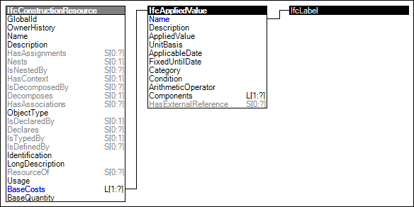

Link to this page
Link to this pageResources can have associated costs indicating financial costs and environmental impacts incurred according to a specified base quantity.
Each cost value may be defined using a constant amount or calculated according to specified formula.
Figure 96 illustrates an instance diagram.
 |
Figure 96 — Resource Cost |